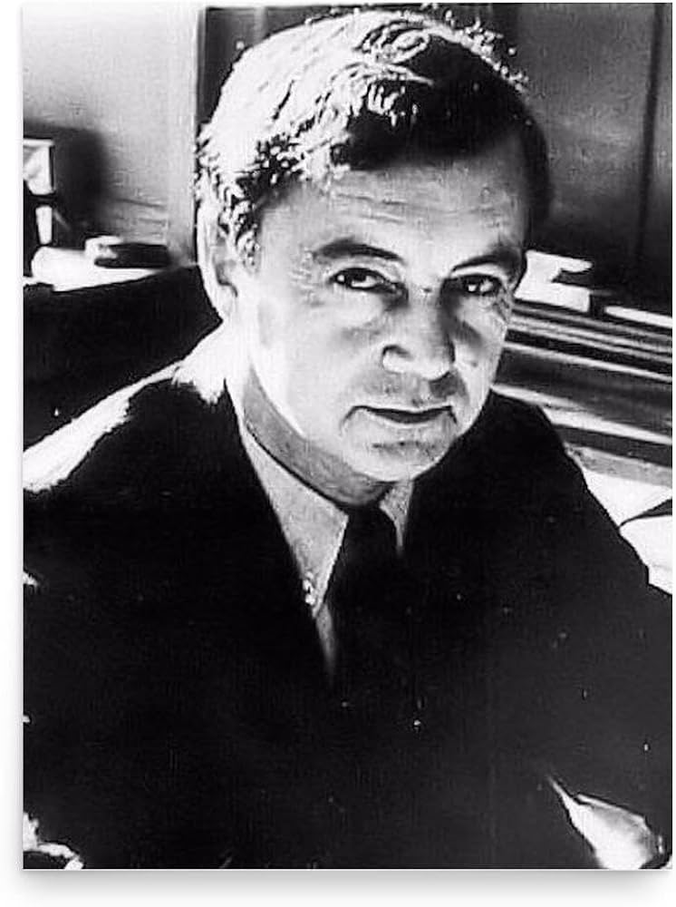
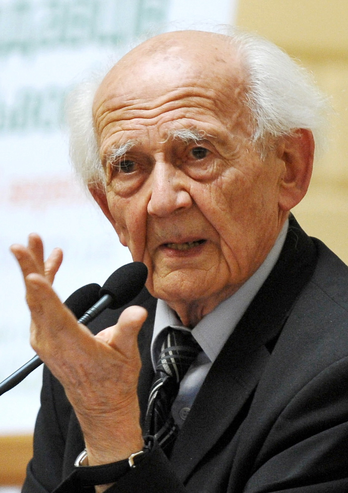

个人理解社会，常常被自己的经验限制。这里不急着灌输结论，而是带你看见：智者如何提问、如何寻找材料、如何形成判断。
韦伯 · 规则与组织
涂尔干 · 失范与团结
齐美尔 · 都市与心灵
从流程、关系、机会、选择这些日常困惑开始，而不是从学术名词开始。
呈现他们的问题意识、人生经历、材料来源和判断方式。
后续接入大学课程、书籍、文章、视频和你的读书笔记。
先借他人的眼睛看世界，再逐渐形成自己的理解路径。
规则与组织
品味与阶层

自我与表演

流动的现代性
变更记录